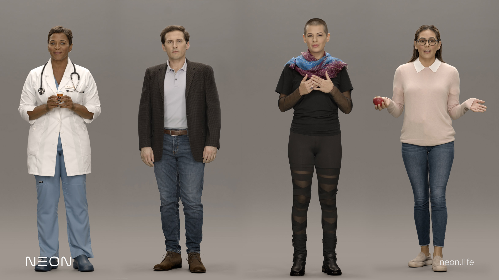

Menu
Pose Detection
Single Pose on Image
Multiple Poses on Image
Multiple Poses on Video
Text Data
Content
The ghost of the King of Denmark tells his son Hamlet to avenge his murder by killing the new king, Hamlet's uncle.Hamlet feigns madness, contemplates life and death, and seeks revenge. His uncle, fearing for his life, also devises plots to kill Hamlet. The play ends with a duel, during which the King, Queen, Hamlet's opponent and Hamlet himself are all killed.
Question
Ask
Answers
Canvas
Video
Input Images
For Single Pose
For Multiple Poses
